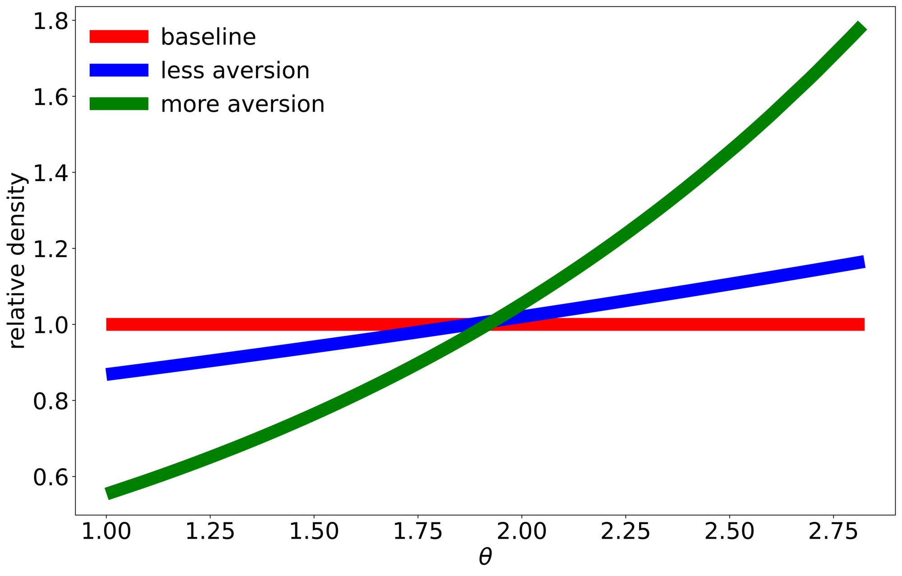
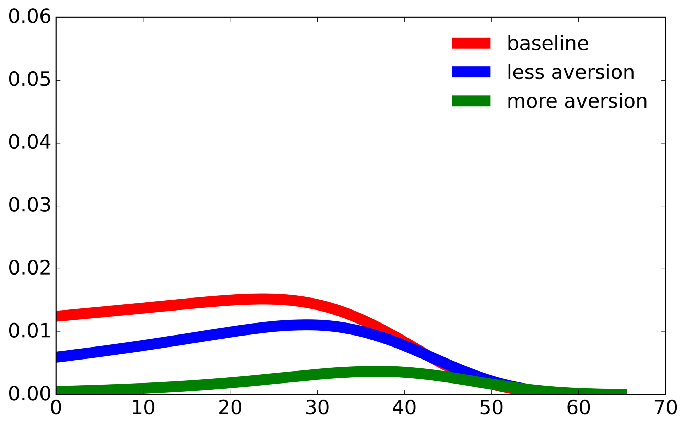
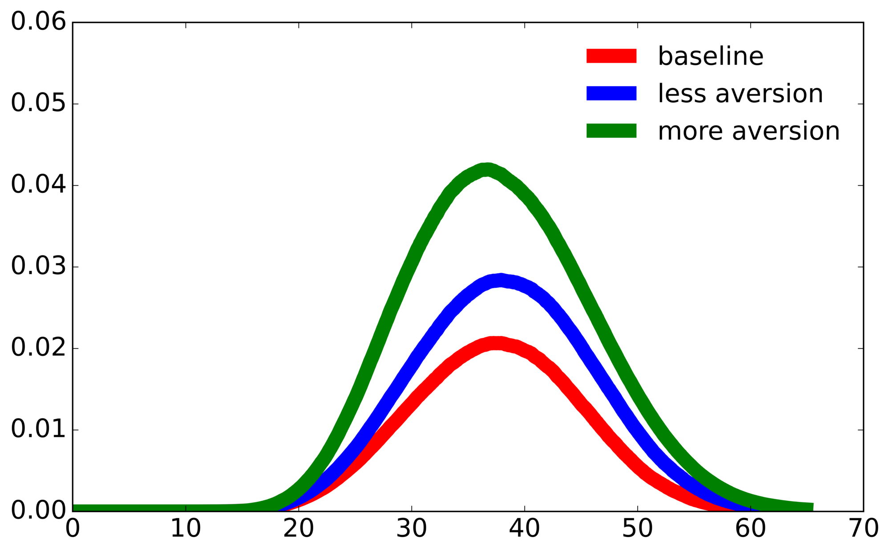
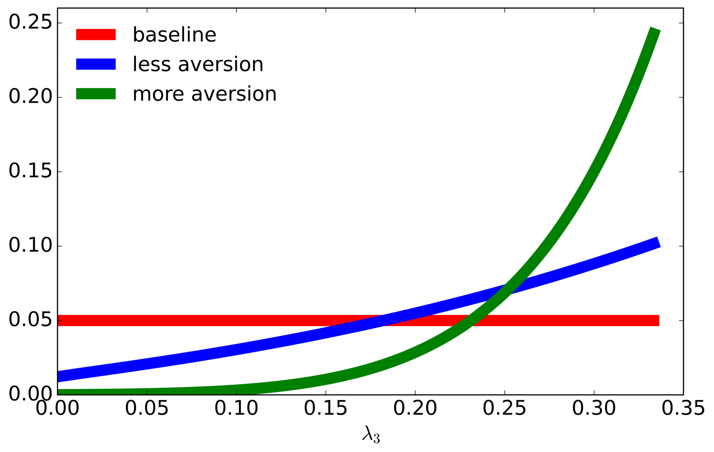

2. Worst-case distributions#
2.1. Drift distortions #
After solving the HJB equations, we can immediately get drift distortions for capital stock evolution and the knowledge stock evolution at the initial time period:
\(h_k(X0)\) |
\(h_r(X0)\) |
|
|---|---|---|
less aversion (\(\xi_m = .1\)) |
-0.094 |
-0.004 |
more aversion (\(\xi_m = .05\)) |
-0.178 |
-0.011 |
bash ./sbatch/postdamage.sh --model full_model
bash ./sbatch/postdamage_sub.sh --model full_model calibrating_xia 1
bash ./sbatch/predamage.sh --model full_model calibrating_xia 1
bash ./sbatch/feymannkacs_prepare.sh --model full_model 1
bash ./sbatch/postdamage_sub.sh --model full_model calibrating_xia 3
bash ./sbatch/predamage.sh --model full_model calibrating_xia 3
bash ./sbatch/feymannkacs_prepare.sh --model full_model 3
bash ./sbatch/postdamage.sh --model full_model --grid-profile double_resolution --initial-guess-grid-profile baseline
bash ./sbatch/predamage.sh --model full_model --grid-profile double_resolution --initial-guess-grid-profile baseline baseline_xia
bash ./sbatch/feymannkacs_prepare.sh --model full_model --grid-profile double_resolution baseline_xia
bash ./sbatch/update_results.sh --model full_model --grid-profile double_resolution --full-model-drift-only
After the run finishes, the prepare job prints h_k(X0) = ... and h_r(X0) = ... to its job-out under job-outs/<dataset>/feymannkacs_prepare/.
Source scripts:
2.2. Distorted density for climate models #
The decision-maker has a baseline probability \(dP_t(\theta)\) that weights each of the 144 climate models equally at every time instant, \(t\), and makes an adjustment for ambiguity by solving Problem 3.2 of the paper:
with the minimizing relative density given by an exponential tilt:

bash ./sbatch/postdamage.sh --model full_model
bash ./sbatch/postdamage_sub.sh --model full_model calibrating_xia 1
bash ./sbatch/predamage.sh --model full_model calibrating_xia 1
bash ./sbatch/feymannkacs_prepare.sh --model full_model 1
bash ./sbatch/postdamage_sub.sh --model full_model calibrating_xia 3
bash ./sbatch/predamage.sh --model full_model calibrating_xia 3
bash ./sbatch/feymannkacs_prepare.sh --model full_model 3
bash ./sbatch/postdamage.sh --model full_model --grid-profile double_resolution --initial-guess-grid-profile baseline
bash ./sbatch/predamage.sh --model full_model --grid-profile double_resolution --initial-guess-grid-profile baseline baseline_xia
bash ./sbatch/zeroshock_trajectories_simulate.sh --grid-profile double_resolution true false false
bash ./sbatch/zeroshock_trajectories_plot.sh --grid-profile double_resolution
bash ./sbatch/update_results.sh --model full_model --grid-profile double_resolution
After the run finishes, you should have an output file named in a pattern similar to
climate_model_relative_weights_year-0.png under output/figures/<dataset>/zeroshock_trajectories_plot/.
Source scripts:
2.3. Distorted density for the time of the first jump #
By conditioning first on the state-variable history, we find that the probability that a jump has occurred by time \(t\) under the uncertainty-adjusted probabilities is
which increases in \(t\). The implied density obtained by differentiating with respect to \(t\) is
We unpack this density by jump type,
where


bash ./sbatch/postdamage.sh --model full_model
bash ./sbatch/postdamage_sub.sh --model full_model calibrating_xia 1
bash ./sbatch/predamage.sh --model full_model calibrating_xia 1
bash ./sbatch/feymannkacs_prepare.sh --model full_model 1
bash ./sbatch/postdamage_sub.sh --model full_model calibrating_xia 3
bash ./sbatch/predamage.sh --model full_model calibrating_xia 3
bash ./sbatch/feymannkacs_prepare.sh --model full_model 3
bash ./sbatch/postdamage.sh --model full_model --grid-profile double_resolution --initial-guess-grid-profile baseline
bash ./sbatch/predamage.sh --model full_model --grid-profile double_resolution --initial-guess-grid-profile baseline baseline_xia
bash ./sbatch/feymannkacs_prepare.sh --model full_model --grid-profile double_resolution baseline_xia
bash ./sbatch/feymannkacs_simulate.sh --model full_model --grid-profile double_resolution Technology
bash ./sbatch/feymannkacs_plot_composite.sh --model full_model --grid-profile double_resolution Technology
bash ./sbatch/update_results.sh --model full_model --grid-profile double_resolution --full-model-composite-only
After the run finishes, you should have output files named in a pattern similar to
all_channel_on_0.1lambda_jacobian_distorted_CompositeTechnology0.083_Discount_nodeltadt_tech_Processs_dt.png and
all_channel_on_0.1lambda_jacobian_distorted_CompositeTechnology0.083_Discount_nodeltadt_damage_Processs_dt.png under output/figures/<dataset>/feymannkacs_plot_composite/.
Source scripts:

bash ./sbatch/postdamage.sh --model tech_only --grid-profile finer_grid
bash ./sbatch/postdamage_sub.sh --model tech_only --grid-profile finer_grid
bash ./sbatch/postdamage.sh --model tech_only --grid-profile double_resolution --initial-guess-grid-profile finer_grid
bash ./sbatch/postdamage_sub.sh --model tech_only --grid-profile double_resolution
bash ./sbatch/feymannkacs_prepare.sh --model tech_only --grid-profile double_resolution
bash ./sbatch/feymannkacs_simulate.sh --model tech_only --grid-profile double_resolution
bash ./sbatch/feymannkacs_plot_composite.sh --model tech_only --grid-profile double_resolution
bash ./sbatch/update_results.sh --model tech_only --grid-profile double_resolution --main-only
When the run finishes you should have output files named in a pattern similar to
tech_only_lambda_jacobian_distorted_allxi_Technology_technology_density.png under output/figures/<tech_only_dataset>/feymannkacs_plot_composite/ (the copy in results_in_paper/ keeps the earlier lambda_jacobian_baseline file name).
Source scripts:
2.4. Distorted probabilities across the alternative damage curves #
Since there are multiple damage-curve realizations, we report how misspecification aversion shifts the weights of the unknown damage curve parameter, \(\lambda_3\).

bash ./sbatch/postdamage.sh --model full_model
bash ./sbatch/postdamage_sub.sh --model full_model calibrating_xia 1
bash ./sbatch/predamage.sh --model full_model calibrating_xia 1
bash ./sbatch/feymannkacs_prepare.sh --model full_model 1
bash ./sbatch/postdamage_sub.sh --model full_model calibrating_xia 3
bash ./sbatch/predamage.sh --model full_model calibrating_xia 3
bash ./sbatch/feymannkacs_prepare.sh --model full_model 3
bash ./sbatch/postdamage.sh --model full_model --grid-profile double_resolution --initial-guess-grid-profile baseline
bash ./sbatch/predamage.sh --model full_model --grid-profile double_resolution --initial-guess-grid-profile baseline baseline_xia
bash ./sbatch/feymannkacs_prepare.sh --model full_model --grid-profile double_resolution baseline_xia
bash ./sbatch/feymannkacs_simulate.sh --model full_model --grid-profile double_resolution Technology
bash ./sbatch/feymannkacs_plot_composite.sh --model full_model --grid-profile double_resolution Technology
bash ./sbatch/update_results.sh --model full_model --grid-profile double_resolution --full-model-composite-only
After the run finishes, you should have output files named in a pattern similar to
all_channel_on_0.1lambda_jacobian_distorted_Technologydamage_curve_year_splines_0_allxi.png under output/figures/<dataset>/feymannkacs_plot_composite/.
Source scripts: